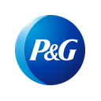

Manfredi Investment
Research & Markets
Equity Research · Informe Institucional
Datos a FY2026 (año fiscal cerrado el 30 jun 2026)
Datos a FY2026 (año fiscal cerrado el 30 jun 2026)

PGNYSE · The Procter & Gamble CompanyCifras fundamentales: SEC EDGAR (10-K del año fiscal cerrado el 30 de junio de 2026, presentado el 4 de agosto de 2026; XBRL companyfacts) y comunicados de resultados trimestrales (8-K, del 1T FY2016 al 4T FY2026; el del 4T FY2026 es del 29 de julio de 2026). El 1T del FY2027 (julio a septiembre de 2026) todavía no se había publicado a la fecha de corte. Precio de mercado: cierre del 25 de septiembre de 2026 (Yahoo Finance). "Mil millones" = billion de EE.UU. "EPS core" = EPS ajustado tal como lo reporta P&G. Este documento es 100% analítico — no constituye una recomendación de compra, venta ni mantenimiento. Ver disclosure completo al pie.
01 — Resumen Ejecutivo
Procter & Gamble cerró su año fiscal 2026 el 30 de junio con ventas de $87.032 millones (+3%), de los cuales dos puntos fueron efecto de las monedas y uno de precio. El orgánico, que excluye monedas y compras o ventas de negocios, creció 1%, con volumen y mezcla en cero. El EPS core fue de $6.89 (+1%; en moneda constante, sin cambios). El cuarto trimestre (abril-junio de 2026) terminó con orgánico en cero y EPS core de $1.43 (−3%). La compañía atribuye parte de ese cero a que los minoristas redujeron inventario: según el CFO, el consumo de sus productos creció 2% en el trimestre, mientras que los despachos de P&G a los minoristas cayeron 1%.
El marco de consumo masivo de este research desk hace una pregunta antes que ninguna otra: ¿el crecimiento viene de volumen o solo de precio? En P&G la respuesta de los últimos dos años es clara. El volumen orgánico promedió 0.5 puntos por trimestre en ocho trimestres y 0.25 en los últimos cuatro, y tres de los cinco segmentos terminaron el FY2026 con volumen negativo (Cuidado personal y aseo, Salud, y Bebés, femenino y familia). La participación de mercado global en valor terminó el año "levemente abajo", según la propia compañía, con 26 de sus 50 principales combinaciones de categoría y país manteniendo o ganando participación.
La valuación se construye con cuatro métodos. Un flujo de caja descontado que proyecta volumen de 0.5%, precio que converge a la inflación de largo plazo (2%) y un margen de flujo operativo anclado en los dos últimos años da $110.77 (−24.3%). Los comparables contra cinco pares de cuidado personal y del hogar, sin usar en ningún paso el precio ni el múltiplo de P&G, dan $122.82. La reversión a su propio P/E forward de diez años y a su P/E relativo al S&P 500 da $160.82, y el consenso de 25 analistas, $160.61. El blend ponderado es de $143.76, −1.7% contra $146.23.
La postura resultante es neutral con sesgo cauteloso. El negocio no se está rompiendo: margen operativo core de 23.6%, conversión de flujo de caja libre de 100%, calificación AA-/Aa3, 70 años consecutivos de aumentos del dividendo y un programa de reestructuración que recorta hasta 7,000 puestos. Pero el precio cotiza con una prima de 12.8% sobre el P/E promedio de sus pares, y ese premio lo justifica solo la historia de la compañía, no su volumen actual. Las Secciones 02 a 12 recorren los datos; la Sección 13 construye el fair value.
02 — Historia y Evolución
William Procter, fabricante de velas, y James Gamble, fabricante de jabón, fundaron la compañía en Cincinnati en 1837; se constituyó como sociedad en 1890 y paga dividendos desde entonces (136 años seguidos, según el 10-K). Durante el siglo XX construyó las marcas que todavía definen su cartera: el jabón Ivory, el detergente Tide (1946), los pañales Pampers (1961), el dentífrico Crest. La compra de Gillette en 2005 sumó afeitadoras (Gillette, Venus), pequeños electrodomésticos (Braun) y cepillos eléctricos (Oral-B).
Entre 2014 y 2017 P&G hizo la reestructuración de cartera más grande de su historia: pasó de unas 170 marcas a unas 65, con la venta de alimento para mascotas (Iams) a Mars, de Duracell a Berkshire Hathaway y de 43 marcas de belleza a Coty. En 2018 compró el negocio de consumo de Merck KGaA (de ahí Neurobion). En 2023-2024 salió de mercados donde no podía operar con rentabilidad: liquidó en lo sustancial sus operaciones en Argentina (completado en septiembre de 2024, con un cargo no recurrente de $801 millones después de impuestos por diferencias de conversión acumuladas) y reestructuró Nigeria. La P&G que se valúa acá es una compañía de 10 categorías y cinco segmentos, con ventas que crecieron a una tasa compuesta de 3.7% anual entre el FY2019 y el FY2026.
Ventas netas anuales, años fiscales cerrados el 30 de junio, en miles de millones de US$, FY2019-FY2026. Fuente: SEC EDGAR XBRL (10-K).
03 — Modelo de Negocio, Marcas y Geografía
P&G vende productos de uso diario en cinco segmentos. Tela y hogar (Fabric & Home Care; Tide, Ariel, Downy, Gain, Dawn, Cascade, Febreze, Swiffer) es el más grande: 35% de las ventas y 35% de la utilidad neta de los segmentos. Bebés, femenino y familia (Pampers, Always, Tampax, Bounty, Charmin) aporta 24% de ambos. Belleza (Head & Shoulders, Pantene, Olay, SK-II, Old Spice, Secret) aporta 19% de las ventas y 17% de la utilidad; Salud (Crest, Oral-B, Vicks, Metamucil, Pepto-Bismol, Neurobion), 14% y 15%; y Cuidado personal y aseo (Grooming; Gillette, Venus, Braun), 8% y 9%.
Ventas netas por segmento, FY2026, en miles de millones de US$. Fuente: comunicado del 4T FY2026 y 10-K. Además hay $0.9 mil millones de ventas registradas en Corporate.
| Segmento | % ventas | % utilidad | Participación global (10-K) | Var. de participación FY26 |
|---|---|---|---|---|
| Tela y hogar | 35% | 35% | Más de 35% en cuidado de la ropa; más de 30% en hogar | 0.0 pp (tela −0.4; hogar +0.3) |
| Bebés, femenino y familia | 24% | 24% | Más de 30% en bebés; casi 30% en femenino; Bounty casi 40% y Charmin más de 25% en Norteamérica | −0.2 pp |
| Belleza | 19% | 17% | Unos 20% en cuidado del cabello (líder); unos 20% en cuidado personal (n.º 2); Olay unos 5% | −0.3 pp |
| Salud | 14% | 15% | Casi 30% en cuidado bucal | +0.4 pp |
| Cuidado personal y aseo | 8% | 9% | Más de 50% en afeitado; más de 60% en hojas y máquinas | −0.4 pp |
Fuente: 10-K del FY2026, Item 1 y MD&A. Porcentajes sobre las ventas y la utilidad neta de los segmentos (sin Corporate). Las variaciones de participación son las que publica la compañía, medidas en valor sobre las categorías y países donde compite; P&G no publica la fuente de scanner detrás de cada dato.
Geografía. Estados Unidos explicó $41.7 mil millones de ventas en el FY2026 (47.9%) y el resto del mundo, $45.3 mil millones. Los cinco mayores mercados fuera de EE.UU. (Gran China, Reino Unido, Canadá, Japón y Alemania) suman 21% de las ventas; Rusia, 1%. La compañía separa "mercados foco" de "mercados empresa": en el FY2026 los primeros crecieron 1% orgánico y los segundos 4%, con América Latina en 6%.
Canales y clientes. Walmart y sus filiales explicaron cerca de 16% de las ventas en el FY2026 (igual que en los dos años previos), y los diez mayores clientes, 43%. La compañía vende en supermercados, hipermercados, clubes de compra, farmacias, comercio electrónico (incluido comercio social) y canales profesionales. Esa concentración es la base del riesgo de "poder del minorista" que se trata en la Sección 10: el minorista decide cuánto inventario mantiene, y en el 4T FY2026 eso le costó a P&G unos tres puntos de crecimiento.
04 — Desarrollos Recientes y Perspectiva
Cambio de CEO. El 28 de julio de 2025 P&G anunció que Shailesh Jejurikar, hasta entonces director de operaciones (COO), reemplazaría a Jon Moeller como presidente y CEO desde el 1 de enero de 2026, con Moeller como presidente ejecutivo del directorio. El 29 de julio de 2026 la compañía informó que Moeller se retira (del directorio el 31 de julio y de la compañía el 14 de agosto de 2026) y que Jejurikar suma la presidencia del directorio desde el 1 de agosto. Jejurikar entró a P&G en 1989 y dirigió Tela y hogar y los mercados empresa. Su primer año como CEO fue, en sus palabras, "un año de construcción de bases".
Reestructuración. En junio de 2025 la compañía lanzó un plan de dos años para "enfocar la cartera, la cadena de suministro y la productividad": salida de algunas marcas, formatos de producto y mercados, y una reducción de hasta 7,000 puestos no fabriles para el fin del FY2027. El 10-K estima un costo total de $1.5-2.0 mil millones antes de impuestos (incluido el nivel habitual de reestructuración, de $250-500 millones por año); más de la mitad se registró en el FY2026. La plantilla terminó el año en unos 104,000 empleados (−4%). La guía del FY2027 incluye un freno de 30-50 puntos básicos en el orgánico por esas discontinuaciones.
Aranceles. En julio de 2025 P&G estimó que los aranceles de EE.UU. le costarían cerca de $1.000 millones antes de impuestos en el FY2026 (unos $400 millones después de impuestos) y subió precios en agosto de 2025 en alrededor de un cuarto de sus productos en EE.UU., con aumentos de un dígito medio. En el año, el efecto neto de los aranceles restó 30 puntos básicos al margen bruto. El 20 de febrero de 2026 la Corte Suprema de EE.UU. invalidó los aranceles impuestos bajo la ley IEEPA: P&G había pagado unos $200 millones y registró la recuperación de la mitad en el 4T FY2026, lo que explica 40 puntos básicos de "beneficio arancelario neto" en el margen bruto de ese trimestre.
China y SK-II. Gran China, el mayor mercado internacional, creció 4% orgánico en el FY2026 y, según la compañía, ganó participación en el 4T por primera vez en 15 trimestres. Bebés creció 20% en China (volvió a ser n.º 1), mientras que cuidado bucal cayó a una tasa de dos dígitos medios por contracción del mercado y competencia. SK-II, la marca de cuidado de la piel de lujo, creció 8% orgánico excluyendo el canal de viajes (duty free), pero la participación global de P&G en cuidado de la piel cayó 0.6 puntos por pérdida de volumen en China.
Compra de Thorne. El 4 de agosto de 2026 P&G acordó comprar Thorne, una marca premium de vitaminas y suplementos, por $3.800 millones, con cierre esperado en el segundo trimestre del FY2027 (octubre-diciembre de 2026). Es 4.4% de las ventas del FY2026 en precio pagado y no cambia el perfil de la compañía, pero amplía Salud en una categoría que crece más que el promedio.
Guía del FY2027. Orgánico de 1%-3% y ventas totales de 1%-3%. EPS core de $6.89-7.11 (0%-3%; punto medio $7.00), que ya absorbe un viento en contra de unos $1.000 millones después de impuestos por materias primas, energía y transporte, más $150 millones por intereses, $150 millones por menor resultado no operativo y $50 millones por monedas: en total $0.56 por acción, 8 puntos de crecimiento del EPS. La compañía anticipó un primer trimestre con EPS 5% o más por debajo del año anterior y una mejora "de semestre a semestre". Conversión de flujo de caja libre de 85%-90%, capex de 4.5%-5.5% de las ventas, dividendos por más de $10.000 millones y recompras por unos $5.000 millones.
05 — Estados Financieros: Orgánico, Márgenes y Reinversión
Crecimiento orgánico trimestral descompuesto en volumen orgánico, precio y mezcla, en puntos porcentuales, 1T FY2025 (jul-sep 2024) a 4T FY2026 (abr-jun 2026). El rombo marca el orgánico total. Fuente: comunicados de resultados de P&G (tabla "Net Sales Drivers").
| Puntos % | 1T25 | 2T25 | 3T25 | 4T25 | 1T26 | 2T26 | 3T26 | 4T26 | Prom. 8T |
|---|---|---|---|---|---|---|---|---|---|
| Volumen orgánico | +1 | +2 | 0 | 0 | 0 | −1 | +2 | 0 | 0.50 |
| Precio | +1 | 0 | +1 | +1 | +1 | +1 | +1 | 0 | 0.75 |
| Mezcla | 0 | +1 | 0 | +1 | +1 | 0 | 0 | 0 | 0.38 |
| Orgánico | +2 | +3 | +1 | +2 | +2 | 0 | +3 | 0 | 1.62 |
| Monedas (FX) | −1 | 0 | −2 | 0 | +1 | +1 | +4 | +1 | |
| Ventas netas reportadas | −1 | +2 | −2 | +2 | +3 | +1 | +7 | +2 |
Fuente: comunicados de resultados trimestrales (8-K). P&G redondea cada componente a puntos enteros ("aproximaciones basadas en fórmulas cuantitativas aplicadas de manera consistente"), por lo que volumen + precio + mezcla puede diferir en un punto del orgánico. Los promedios de los últimos cuatro trimestres son: orgánico 1.25, volumen 0.25, precio 0.75 y mezcla 0.25. El 3T FY2026 (+3%) se compara contra un 3T FY2025 débil y el 4T FY2026 (0%) incluye una reducción de inventario de minoristas; ninguno de los dos se usa aislado.
Tres lecturas. Primero, el precio ya no es el motor que fue: después de sumar 4 puntos en el FY2024, aportó 1 punto por año en el FY2025 y el FY2026. Segundo, el volumen no tomó la posta: promedió 0.5 puntos en ocho trimestres, con un solo trimestre de +2 (el 3T FY2026, contra una base débil). Tercero, cuando el orgánico cae a cero, como en el 2T y el 4T del FY2026, es porque el volumen se vuelve negativo o los minoristas reducen inventario, no porque el precio baje. Es exactamente la señal que el marco de consumo masivo pide vigilar.
Crecimiento orgánico anual, FY2019-FY2026, en %. Fuente: presentación de resultados del 4T FY2026 de P&G.
| FY2026, puntos % | Volumen | Precio | Mezcla | Orgánico | Orgánico 4T26 | Ventas (US$ M) |
|---|---|---|---|---|---|---|
| Belleza | +4 | +1 | 0 | +5 | +4 | 16,023 |
| Cuidado personal y aseo | −1 | +2 | 0 | +1 | 0 | 6,918 |
| Salud | −2 | +2 | +1 | +1 | −1 | 12,456 |
| Tela y hogar | 0 | +1 | 0 | +1 | 0 | 30,314 |
| Bebés, femenino y familia | −1 | 0 | 0 | −1 | −2 | 20,401 |
| Total P&G | 0 | +1 | 0 | +1 | 0 | 87,032 |
Fuente: 10-K del FY2026 (MD&A, "Net Sales Change Drivers") y comunicado del 4T FY2026. El orgánico anual por segmento es el que publica la compañía en el MD&A (Belleza +5%; Cuidado personal y aseo, Salud, y Tela y hogar +1%; Bebés, femenino y familia −1%).
FY2026 por segmento: volumen, precio y mezcla, en puntos porcentuales (valores exactos en la tabla de arriba).
Belleza es el único segmento que crece por volumen (+4 puntos), con cuidado del cabello en América Latina, Europa y Asia, y cuidado personal (desodorantes, jabón corporal) en todas las regiones. En el resto, el precio compensa volumen negativo: Salud perdió 2 puntos de volumen (cuidado bucal en China y Norteamérica, y una temporada de gripe más suave en EE.UU.), Cuidado personal y aseo perdió 1 punto (pérdida de distribución en India, Medio Oriente y África, y contracción del mercado en Norteamérica), y en Bebés, femenino y familia el volumen cayó 1 punto y el precio fue cero, porque en papel higiénico y toallas de papel la compañía tuvo que invertir en promociones: la participación de P&G en esa categoría en Norteamérica cayó 0.7 puntos, "por la actividad de la competencia".
P&G reporta sus datos de participación sin citar la fuente de scanner, y no hay a la fecha de corte una cita pública de Circana o NielsenIQ específica de sus categorías; este informe usa lo que publica la compañía. En el FY2026, 26 de sus 50 principales combinaciones de categoría y país mantuvieron o ganaron participación, y cinco de sus diez categorías mantuvieron o ganaron participación global. Según la conferencia del 29 de julio, la tendencia mejoró en el segundo semestre: en EE.UU., la proporción de combinaciones de cliente y categoría con participación estable o en alza pasó de menos de 10% en el primer semestre a 50% en el segundo. En el lado de la competencia de marcas propias de los supermercados, Circana estima que en 2025 alcanzaron ventas de $330.000 millones en EE.UU., con 24% de participación en unidades y 23% en valor del consumo masivo total, y espera que sigan ganando participación a un ritmo más moderado. En P&G el efecto se ve donde la diferenciación de producto es menor: papel (Family Care, con precio negativo y pérdida de participación) y pañales en EE.UU., donde la compañía bajó precios para recuperar volumen.
| US$ millones | 4T FY26 | 4T FY25 | Var. | FY2026 | FY2025 | Var. |
|---|---|---|---|---|---|---|
| Ventas netas | 21,203 | 20,889 | +1.5% | 87,032 | 84,284 | +3.3% |
| Margen bruto GAAP | 48.5% | 49.1% | −60 pb | 50.2% | 51.2% | −100 pb |
| Margen bruto core | 49.1% | 49.1% | 0 pb | 50.7% | 51.1% | −40 pb |
| Gastos de venta, generales y adm. / ventas (core) | 29.6% | 28.3% | +130 pb | 27.1% | 26.9% | +20 pb |
| Margen operativo core | 19.5% | 20.8% | −130 pb | 23.6% | 24.3% | −70 pb |
| Utilidad neta atribuible (GAAP) | 3,044 | 3,615 | −15.8% | 16,046 | 15,974 | +0.5% |
| EPS diluido GAAP | $1.26 | $1.48 | −15% | $6.62 | $6.51 | +2% |
| EPS core | $1.43 | $1.48 | −3% | $6.89 | $6.83 | +1% |
Fuente: comunicado del 4T FY2026 (8-K del 29-jul-2026). El EPS core excluye la reestructuración que supera el nivel habitual ($0.37 por acción en el FY2026; $0.33 en el FY2025) y la ganancia por la disolución de la sociedad conjunta de Glad con Clorox ($0.11 en el FY2026). Como la compañía reestructura todos los años (el nivel "habitual" de $250-500 millones queda dentro del core), esos cargos incrementales no son del todo no recurrentes: se registraron en el FY2024 ($0.15), el FY2025 y el FY2026, y se esperan en el FY2027 ($0.13-0.17).
Puente del margen bruto GAAP del FY2026 contra el FY2025, en puntos básicos (−100 pb en total). Azul: suman; rojo: restan. Fuente: 10-K del FY2026, MD&A.
El margen bruto muestra cómo funciona el modelo de P&G. La productividad de fabricación sumó 180 puntos básicos en el año, pero no llegó al resultado: la compañía la reinvirtió en productos y envases (−70 pb) y la perdió en mezcla (−120 pb, porque crecen más los formatos y regiones de menor margen). El precio sumó apenas 40 pb, y aranceles y materias primas restaron 50. En gastos, la productividad aportó otros 160 pb, pero el gasto en marketing subió 80 pb como porcentaje de las ventas. La publicidad pasó de $9.200 millones (10.9% de las ventas) a $10.200 millones (11.7%). Eso importa para la calidad del margen: el margen operativo core bajó 70 pb con más publicidad, no menos. La reinversión en marca no se recortó para sostener el resultado. Es la señal opuesta a la que el marco de consumo masivo marca como de baja calidad.
Margen bruto GAAP, margen operativo GAAP y publicidad sobre ventas, FY2020-FY2026, en %. El FY2019 se omite porque incluye una desvalorización de $8.345 millones de la marca Gillette que lleva el margen operativo a 8.1%. Fuente: SEC EDGAR XBRL, cálculo propio.
06 — Balance y Deuda
| US$ millones | 30-jun-2026 | 30-jun-2025 |
|---|---|---|
| Caja y equivalentes | 9,942 | 9,556 |
| Deuda de corto plazo (incluye papel comercial por 4,837) | 11,296 | 9,513 |
| Deuda de largo plazo | 22,842 | 24,995 |
| Deuda financiera neta | 24,196 | 24,952 |
| Arrendamientos (compromisos contractuales) | 1,028 | — |
| Inventarios | 8,170 | 7,551 |
| Cuentas a pagar | 16,306 | 15,227 |
| Goodwill + marcas e intangibles | 62,720 | 63,560 |
| Patrimonio neto | 54,311 | 52,284 |
| Activos totales | 126,521 | 125,231 |
Fuente: comunicado del 4T FY2026 (balance consolidado) y 10-K del FY2026 (Nota 10 y compromisos contractuales). EBITDA core = resultado operativo core ($20,497 millones) + depreciación y amortización ($3,160 millones), cálculo propio.
La deuda financiera neta de $24.200 millones equivale a 1.02 veces el EBITDA core del FY2026 ($23.7 mil millones), por debajo del rango de 2-3 veces típico de un staple con grado de inversión. Las calificaciones son AA- (S&P) y Aa3 (Moody's) de largo plazo y A-1+/P-1 de corto, todas con perspectiva estable, y la compañía tiene líneas de crédito por $8.000 millones sin usar. Del total de deuda, $11.357 millones vencen en los próximos doce meses, en buena parte papel comercial que se renueva. La compra de Thorne ($3.800 millones, todavía sin cerrar a la fecha de corte) llevaría la deuda neta a cerca de 1.2 veces el EBITDA.
Dos puntos del balance. Goodwill, marcas e intangibles suman 49.6% de los activos, sobre todo por Gillette: la marca ya se desvalorizó dos veces ($8.345 millones en el FY2019 y $1.300 millones en el FY2024, en este último caso por una tasa de descuento más alta y monedas más débiles). Y el capital de trabajo es negativo: las cuentas a pagar ($16.306 millones) duplican los inventarios, algo que P&G construyó con plazos largos a proveedores. En el FY2026 el aumento de cuentas a pagar sumó $919 millones al flujo operativo y en el FY2025 restó $542 millones, por eso el DCF ancla el margen de caja en los dos años juntos (Sección 13).
07 — Flujo de Caja, Dividendo y Asignación de Capital
| US$ millones | FY2022 | FY2023 | FY2024 | FY2025 | FY2026 |
|---|---|---|---|---|---|
| Flujo operativo (OCF) | 16,723 | 16,848 | 19,846 | 17,817 | 19,556 |
| Capex | 3,156 | 3,062 | 3,322 | 3,773 | 4,409 |
| Flujo de caja libre (FCF) | 13,567 | 13,786 | 16,524 | 14,044 | 15,147 |
| Dividendos pagados | 8,770 | 8,999 | 9,312 | 9,872 | 10,232 |
| Recompras de acciones | 10,003 | 7,353 | 5,006 | 6,500 | 5,028 |
| (Dividendos + recompras) / FCF | 138% | 119% | 87% | 117% | 101% |
Fuente: SEC EDGAR XBRL (estado de flujo de efectivo del 10-K). El FCF de la tabla es OCF − capex, sin ajustes. P&G publica además un "FCF ajustado" que suma de vuelta los pagos del impuesto de transición de la reforma tributaria de 2017 ($688 millones en el FY2026, el último pago; $562 millones en el FY2025): $15,835 millones en el FY2026, 100% de la utilidad neta sin la ganancia de Glad.
Flujo operativo, capex y flujo de caja libre, FY2022-FY2026, en miles de millones de US$ (valores exactos en la tabla de arriba). Fuente: SEC EDGAR XBRL.
La conversión de caja es la fortaleza que el precio sí paga con razón. El FCF ajustado fue 100% de la utilidad neta en el FY2026 (87% en el FY2025), dentro de la meta de largo plazo de la compañía (90% o más), aunque la guía del FY2027 lo baja a 85%-90% por el costo de materias primas y la reestructuración. El capex subió a 5.1% de las ventas (4.5% en el FY2025) y la guía lo mantiene en 4.5%-5.5%.
El dividendo es el primer destino de la caja. En abril de 2026 P&G lo aumentó 3%, a $1.0885 por trimestre ($4.354 anual, 2.98% de rendimiento al precio de corte): es el aumento número 70 consecutivo, y la compañía paga dividendo desde hace 136 años. En diez años el dividendo creció a una tasa compuesta de 5% anual. El pago equivale a 61.8% del EPS core y 64.6% del FCF ajustado. Sumando las recompras ($5.000 millones), la compañía devolvió $15.3 mil millones en el FY2026, 96% del FCF ajustado, y guía un monto similar para el FY2027. La asignación de capital es conservadora: compras chicas (Thorne es la mayor desde la del negocio de consumo de Merck KGaA en 2018) y venta o discontinuación de marcas lentas, como la cartera que el plan de 2025 está depurando.
08 — Comparables de Industria
| Compañía | P/E forward | EV/EBITDA fwd* | Orgánico (últ. trim.) | Volumen | Rend. div. | FCF yield | Beta 5 años | |
|---|---|---|---|---|---|---|---|---|
| Procter & Gamble (PG) — referencia, no entra al promedio | 20.64x | 15.10x | 0% (4T FY26) | 0.0% | 2.98% | 4.67% | 0.38 | |
| Colgate-Palmolive (CL) | 21.91x | 14.41x | +2.4% (2T26) | +0.9% | 2.45% | 5.60% | 0.32 | |
| Kimberly-Clark (KMB) | 14.06x | 10.93x | −0.1% (2T26) | +0.3%** | 5.19% | 5.59% | 0.27 | |
| Clorox (CLX) | 14.47x | 11.80x | −13% (4T FY26) | n. c.*** | 6.17% | 4.12% | 0.54 | |
| Church & Dwight (CHD) | 24.69x | 18.34x | +5.8% (2T26) | +4.3% | 1.28% | 4.95% | 0.47 | |
| Unilever (UL) | 16.32x | 13.02x | +5.8% (2T26) | +5.5% | 3.52% | 6.16% | 0.45 | |
| Promedio de los cinco pares | 18.29x | 13.70x | ||||||
| Kenvue (KVUE) — excluida | 14.75x | — | Cotiza atada al canje de la compra por Kimberly-Clark (0.14625 acciones de KMB + $3.50 por acción = $17.90 contra $17.80 de cierre): su múltiplo refleja el precio de KMB, no una valuación propia | |||||
P/E forward, EV, EBITDA de los últimos doce meses, rendimiento de dividendo, FCF yield y beta: stockanalysis.com, cierre del 25-sep-2026 (datos de una fuente agregada, no recalculados). *EV/EBITDA forward: cálculo propio = EV / (EBITDA de los últimos doce meses × (1 + crecimiento de ventas del consenso para el año fiscal en curso)); supone margen EBITDA constante. Para P&G, EV = capitalización + deuda neta con arrendamientos, sobre el EBITDA core del FY2026 × (1 + 2.0%). Orgánico y volumen: comunicados de cada compañía (Colgate, Church & Dwight y Unilever: volumen del trimestre; Unilever reporta "crecimiento de ventas subyacente"). **Kimberly-Clark reporta volumen y mezcla juntos. ***Clorox: el orgánico del 4T FY2026 está distorsionado por la comparación contra despachos anticipados a su cambio de sistema ERP (unos 13.5 puntos, según la compañía); su volumen no es comparable y se deja fuera de la regresión.
P/E forward de P&G y de los cinco pares de cuidado personal y del hogar. Fuente: stockanalysis.com, 25-sep-2026.
P&G cotiza a 20.6x las ganancias de los próximos doce meses, 12.8% por encima del promedio de sus pares (18.3x), y a 15.1x el EBITDA, 10.3% por encima. Solo Colgate (con 41.3% del mercado mundial de pasta dental) y Church & Dwight (con 4.3% de volumen) cotizan más caro. Kimberly-Clark y Clorox, con volumen débil y problemas propios (la integración de Kenvue y el cambio de sistema de Clorox), cotizan a 14 veces.
¿Hay un ajuste por calidad del crecimiento? El marco solo lo permite si una regresión del grupo lo sostiene. Con los cuatro pares que tienen volumen comparable, la regresión del P/E forward contra el volumen da un R² de 0.05: no hay relación. Sacando el punto más extremo (UL), el R² sube a 0.63, pero con tres puntos y un grado de libertad ese número no dice nada. Contra el crecimiento del EPS esperado para el año siguiente, con los cinco pares, el R² es de 0.12; sin el punto más extremo (KMB), de 0.24 y con pendiente negativa. Ninguna de las dos regresiones sostiene un premio o descuento, así que la Sección 13 no ajusta el múltiplo por volumen. En este grupo el mercado no parece pagar el volumen de forma sistemática: Unilever, con el mayor volumen, cotiza por debajo del promedio.
09 — Gobierno Corporativo y Estructura Accionaria
Fuente: SEC DEF 14A de P&G (proxy 2026, presentado el 28-ago-2026; asamblea del 13-oct-2026), 8-K del 28-jul-2025 y del 29-jul-2026, 10-K del FY2026; stockanalysis.com (tenencia institucional e insiders, posiciones cortas, sep-2026).
La estructura es simple: una sola clase de acciones con voto (más acciones preferidas convertibles del plan de participación de empleados, que se cuentan en las acciones diluidas) y ningún accionista con más de 10%. Con el retiro de Moeller, Jejurikar concentra los cargos de CEO y presidente, algo que la compañía ya había tenido con sus antecesores; el directorio mantiene un director independiente líder (Joe Jimenez). El antecedente de activismo es conocido: Trian Partners, de Nelson Peltz, ganó un lugar en el directorio tras la votación de 2017, una de las más caras de la historia, con la crítica de que la organización era demasiado compleja; ya no forma parte del directorio. No hay a la fecha de corte una campaña activista pública.
10 — Registro de Riesgos
| Riesgo | Descripción y dato de respaldo | Impacto |
|---|---|---|
| Volumen negativo o nulo sostenido | Volumen orgánico de 0.5 puntos promedio en ocho trimestres; negativo en tres de cinco segmentos en el FY2026. Cada 2 puntos anuales de volumen mueven el DCF Base en torno a 10% (Sección 13). | Alto |
| Consumidor de EE.UU. y poder del minorista | EE.UU. es 48% de las ventas y Walmart 16%. En el 4T FY2026 los minoristas redujeron inventario (consumo +2%, despachos −1%). El CFO señaló que la nafta más cara pesa sobre los hogares de menores ingresos, aunque la cartera de P&G se inclina hacia hogares de más de $100.000 anuales. | Alto |
| Marcas propias y "trade-down" | Marcas propias con 24% de las unidades y 23% del valor en EE.UU. (Circana, 2025). En papel (Family Care) P&G perdió 0.7 puntos de participación y tuvo precio negativo. | Medio-alto |
| Costo de insumos | La guía FY2027 absorbe unos $1.000 millones después de impuestos por materias primas, energía y transporte (resinas derivadas del petróleo, pulpa). Trasladarlo a precio con volumen en cero es el dilema del año. | Medio-alto |
| Aranceles | Unos $1.000 millones antes de impuestos estimados para el FY2026 (−30 pb netos de margen bruto). Parte de los aranceles IEEPA se recupera tras el fallo de la Corte Suprema, pero otros regímenes arancelarios siguen vigentes y la guía excluye "cambios significativos de aranceles". | Medio |
| China y emergentes | Gran China es el mayor mercado internacional; cuidado bucal cayó a dos dígitos medios y cuidado de la piel perdió 0.6 puntos de participación global. La salida de Argentina ya se completó (septiembre de 2024), por lo que el "precio" del orgánico ya no está inflado por hiperinflación. | Medio |
| Monedas | 52% de las ventas fuera de EE.UU. Las monedas sumaron 2 puntos a las ventas del FY2026; la guía FY2027 asume un efecto casi nulo en ventas y −$50 millones en utilidad. | Medio |
| Ejecución de la reestructuración y transición de liderazgo | Hasta 7,000 puestos menos y salida de marcas y mercados (−30-50 pb de orgánico en el FY2027). Nuevo CEO y nuevo presidente en el mismo año; la responsable de Salud se retiró el 30-jun-2026. | Bajo-medio |
| Desvalorización de marcas | Goodwill e intangibles son 50% de los activos. Gillette ya se desvalorizó en el FY2019 y el FY2024 con tasas de descuento más altas; la tasa a 10 años de EE.UU. está en 5.18%. | Bajo (no afecta la caja) |
| GLP-1 | Exposición baja: las categorías de P&G son de higiene, limpieza y cuidado personal, no alimentos, snacks ni bebidas. | Bajo |
El escenario Bear de la Sección 13 se apoya en los tres primeros riesgos: volumen de −0.5% anual (un deterioro moderado respecto del cero actual, del orden de los segmentos que ya pierden volumen), precio de 1%-1.5% (sin poder trasladar toda la inflación), margen de flujo operativo de 21.5%, el que implica la guía de conversión de caja del FY2027, y capex de 5.5%, el techo de la guía.
11 — Catalizadores
| Evento | Fecha esperada | Por qué importa |
|---|---|---|
| Asamblea anual de accionistas | 13 de octubre de 2026 | Primera asamblea con Jejurikar como CEO y presidente del directorio. |
| Resultados del 1T FY2027 (jul-sep 2026) | Mediados o fines de octubre de 2026 (a confirmar) | La guía anticipa EPS core 5% o más por debajo del año anterior. Lo clave es el volumen y si se revierte la reducción de inventario de los minoristas del 4T. |
| Cierre de la compra de Thorne | 2T FY2027 (octubre-diciembre de 2026) | $3.800 millones; suma una categoría de crecimiento a Salud. |
| Cierre de Kimberly-Clark + Kenvue | 4T de 2026 (según KMB) | Crea un competidor más grande en pañales, papel y cuidado personal, y en la negociación con los minoristas. |
| Resultados del 2T FY2027 y conferencia CAGNY | Enero y febrero de 2027 | Primera prueba de la mejora "de semestre a semestre"; CAGNY es donde las compañías de consumo actualizan sus algoritmos de largo plazo. |
| Aumento del dividendo número 71 | Abril de 2027 (habitual) | Con un payout de 62% del EPS core, un aumento de 3%-5% es consistente con la historia reciente. |
| Guía del FY2028 | Reporte del 4T FY2027 (fines de julio de 2027) | Define si el crecimiento vuelve al algoritmo de largo plazo (orgánico por encima del mercado, EPS de un dígito medio a alto). |
12 — Modelo Financiero Proyectado y Momentum de Estimados
| Métrica | FY2026 (real) | FY2027 guía | FY2027 consenso | FY2028 consenso |
|---|---|---|---|---|
| Ventas (US$ miles de millones) | 87.03 | 87.9-89.6 | 88.78 | 91.46 |
| Crecimiento de ventas | +3.3% | +1% a +3% | +2.0% | +3.0% |
| EPS core | $6.89 | $6.89-7.11 | $6.98 | $7.40 |
| Crecimiento del EPS core | +1% | 0% a +3% | +1.3% | +6.0% |
Fuentes: guía de la compañía (comunicado del 29-jul-2026); consenso de stockanalysis.com (S&P Global, 25 analistas, sep-2026). El rango de ventas de la guía es cálculo propio aplicando 1%-3% a las ventas del FY2026.
EPS core real del FY2026, punto medio de la guía FY2027 ($6.89-7.11) y consenso FY2027 y FY2028, en US$ por acción.
Dos lecturas. Primero, el consenso de EPS del FY2027 ($6.98) queda apenas por debajo del punto medio de la guía ($7.00): los analistas no esperan sorpresas, ni para arriba ni para abajo. Segundo, casi todo el crecimiento está en el FY2028 (+6.0%), cuando se supone que el viento en contra de costos se modera y los ahorros de la reestructuración llegan completos. No hay una serie pública verificable de revisiones de EPS de P&G en los últimos 90 días; como referencia sectorial, FactSet informó el 25 de septiembre de 2026 que consumo masivo es el segundo sector del S&P 500 con mayor recorte de estimaciones del trimestre (−3.3%), con 70% de sus compañías revisadas a la baja. Este informe no proyecta línea por línea más allá del FY2028; los años siguientes se modelan con los supuestos del DCF, cuyo caso Base da ventas de $88.7 mil millones en el FY2027, −0.1% contra el consenso.
13 — Valuación: Cuatro Métodos y el Fair Value
P&G es el primer informe del marco de consumo masivo de este research desk, en la sub-industria de cuidado personal y del hogar. Los pesos son los de la casa: flujo de caja descontado (DCF) 15%, comparables 25%, reversión histórica 35% y consenso 25%. Una advertencia antes de los números: dos de los cuatro métodos —la reversión y el consenso— parten de cómo el mercado viene valuando a P&G, y juntos pesan 60% del blend. El DCF y los comparables no usan el precio ni el múltiplo de P&G en ningún paso. La síntesis muestra el resultado de cada grupo.
Costo de capital. Tasa libre de riesgo de 5.18% (Treasury a 10 años, cierre del 25-sep-2026) y prima de riesgo de mercado de 5.0%. La beta de P&G a cinco años es de 0.38, muy baja, así que se usa la mediana de sus pares de cuidado personal y del hogar (Colgate 0.32, Kimberly-Clark 0.27, Clorox 0.54, Church & Dwight 0.47, Kenvue 0.43, Unilever 0.45: mediana 0.44) ajustada por Blume (0.67 × beta + 0.33): 0.625. El costo del equity es de 8.30%, por encima del piso del marco (tasa libre de riesgo + 2.5% = 7.68%). La deuda, con una tasa supuesta de 5.58% antes de impuestos (el Treasury más 40 puntos básicos, un supuesto propio para un emisor AA-) y una tasa impositiva de 20% (la tasa core guiada), cuesta 4.46% después de impuestos y pesa 9.1% del valor total a precios de mercado. El WACC es de 7.95%. Con la beta propia de P&G ajustada por Blume (0.585) el costo del equity sería de 8.10%, el WACC de 7.77% y el DCF Base daría $114.90 en lugar de $110.77: elegir la beta de los pares resta $4.14 por acción, y se declara como tal.
Crecimiento. Las ventas se proyectan separando volumen, precio y mezcla, con la base de los últimos ocho trimestres: volumen orgánico de 0.5% y mezcla de 0.38% (promedios de ocho trimestres), y un precio que parte de 1% en el FY2027 (el ritmo real de ocho trimestres, 0.75 puntos, redondeado hacia arriba por el costo de insumos que absorbe la guía) y converge a 2% desde el FY2029, la meta de inflación de largo plazo de la Reserva Federal. No se usa el ritmo de precio de 2022-2023. El resultado es un orgánico de 1.9% en el FY2027, en el medio de la guía (1%-3%), que sube a 2.9% desde el FY2029, con monedas neutrales. Crecimiento a perpetuidad de 2.5%.
Margen de caja anclado en el flujo real. El margen de flujo operativo del FY2026 fue de 22.5% y el del FY2025, 21.1%. Ambos están deprimidos por los pagos del impuesto de transición de 2017 ($688 y $562 millones, ya terminados); sin ellos, 23.3% y 21.8%. El FY2026 tampoco es una base limpia: las cuentas a pagar sumaron $919 millones (y restaron $542 millones en el FY2025) y el 4T FY2026 tuvo una conversión de 133%. Por eso el año 1 del Base usa la ventana de los dos años juntos: 22.5% (se redondea a 22.5%). La guía del FY2027 (conversión de 85%-90% y capex de 4.5%-5.5%) implica un margen de flujo operativo más bajo, en torno a 21.5%: ese es el supuesto del Bear. Capex de 5.0% de las ventas en el Base, el punto medio de la guía.
| Supuesto | Bear | Base | Bull |
|---|---|---|---|
| Volumen orgánico anual (FY2027-FY2031) | −0.5% | +0.5% | +1.5% |
| Precio (FY2027 → FY2029 en adelante) | 1.0% → 1.5% | 1.0% → 2.0% | 1.5% → 2.5% |
| Mezcla anual | +0.2% | +0.4% | +0.5% |
| Crecimiento anual compuesto de ventas FY2026-FY2031 (resultado) | 1.0% | 2.6% | 4.2% |
| Margen de flujo operativo | 21.5% | 22.5% | 22.5% → 23.5% |
| Capex / ventas | 5.5% | 5.0% | 4.75% → 4.5% |
| WACC / crecimiento a perpetuidad | 8.45% / 2.0% | 7.95% / 2.5% | 7.45% / 3.0% |
| Valor de empresa (US$ miles de millones) | 213.7 | 291.4 | 406.8 |
| % del valor en la perpetuidad | 73.6% | 77.6% | 82.1% |
| Fair value por acción | $78.54 | $110.77 | $158.58 |
| Caso Base (US$ miles de millones) | FY2027 | FY2028 | FY2029 | FY2030 | FY2031 |
|---|---|---|---|---|---|
| Crecimiento de ventas | 1.9% | 2.4% | 2.9% | 2.9% | 2.9% |
| Ventas | 88.7 | 90.8 | 93.4 | 96.2 | 98.9 |
| Flujo de caja libre (OCF − capex, 17.5% de las ventas) | 15.52 | 15.89 | 16.35 | 16.83 | 17.32 |
| Valor presente | 11.31 | 14.44 | 13.77 | 13.12 | 12.51 |
Modelo propio. Valuación al 30-sep-2026: del FY2027 solo cuentan tres trimestres (octubre de 2026 a junio de 2027), descontados a mitad de ese período; los años siguientes, a mitad de año. Valor presente de los flujos explícitos: $65.2 mil millones; de la perpetuidad: $226.3 mil millones. Se resta la deuda financiera neta al 30-jun-2026 ($24.2 mil millones); los arrendamientos operativos no se restan, porque sus pagos ya reducen el flujo operativo proyectado. Se divide por 2,412.7 millones de acciones diluidas (promedio del 4T FY2026, incluye las preferidas convertibles). La compra de Thorne se trata como neutral (se paga a valor de mercado) y no se incluye. Valor esperado ponderado por probabilidad (25% Bear, 45% Base, 30% Bull): $117.05; promedio simple: $115.96.
El DCF Base da $110.77, −24.3% contra el precio, con 77.6% del valor en la perpetuidad (en la parte alta del 70%-80% típico de un staple). Chequeo de sesgo. La brecha queda por debajo del umbral de 30%-40% del marco, pero se revisaron igual los tres puntos que pide: (1) costo de capital: con la beta propia el valor sube a $114.90 ($4.14), y el costo de equity de 8.30% está 0.62 puntos por encima del piso, no por debajo; (2) margen de caja del año 1: si se usa solo el FY2026 ajustado (23.3%), el valor sube a $116.02; con el margen que implica la guía del FY2027 (21.5%) baja a $103.86; (3) precio y volumen: el Base no usa el precio de la era inflacionaria ni el volumen de un trimestre atípico (ni el +2 del 3T FY2026 ni el 0 del 4T), sino promedios de ocho trimestres. Ningún ajuste razonable lleva el DCF al precio.
| Volumen anual respecto del Base | −2 puntos (−1.5%) | Base (+0.5%) | +2 puntos (+2.5%) |
|---|---|---|---|
| Fair value DCF | $100.42 | $110.77 | $121.90 |
| Variación contra el Base | −9.3% | — | +10.1% |
Recalcula el modelo completo moviendo solo el volumen de los cinco años explícitos; precio, mezcla, márgenes y perpetuidad quedan como en el Base. Con volumen exactamente en cero (el del FY2026) el DCF da $108.11.
| WACC \ g | 1.5% | 2.0% | 2.5% | 3.0% | 3.5% |
|---|---|---|---|---|---|
| 6.95% | $114.63 | $124.96 | $137.60 | $153.45 | $173.88 |
| 7.45% | $104.24 | $112.68 | $122.83 | $135.25 | $150.82 |
| 7.95% | $95.46 | $102.47 | $110.77 | $120.74 | $132.95 |
| 8.45% | $87.95 | $93.85 | $100.74 | $108.89 | $118.69 |
| 8.95% | $81.45 | $86.47 | $92.27 | $99.05 | $107.06 |
Grilla propia: recalcula el DCF completo del caso Base para cada combinación. La celda enmarcada reproduce el fair value del Método 1 ($110.77).
DCF inverso: qué exige el precio. Con el resto del Base igual, el DCF llega a $146.23 con un WACC de 6.71% (1.25 puntos menos), con un crecimiento a perpetuidad de 3.94% (por encima del crecimiento nominal que el marco considera razonable para un staple maduro) o con un volumen de 6.4% anual durante cinco años, casi 13 veces el +0.5% promedio de los últimos ocho trimestres. El precio se sostiene, sobre todo, en un costo de capital más bajo que el que da el CAPM con betas de pares: el mercado trata a P&G casi como un bono.
Se promedian dos múltiplos del grupo: P/E forward (18.29x) y EV/EBITDA forward (13.70x), ambos promedios simples de Colgate, Kimberly-Clark, Clorox, Church & Dwight y Unilever (Kenvue queda afuera, ver Sección 08). Ninguno usa el precio ni el múltiplo de P&G. El P/E se aplica al EPS de consenso del FY2028 ($7.40) y el EV/EBITDA al EBITDA core del FY2026 llevado al FY2028 con el crecimiento de ventas del consenso ($24.86 mil millones), restando la deuda neta con arrendamientos ($25.2 mil millones), porque el valor de empresa de los pares en la fuente también los incluye. Como el FY2028 (julio de 2027 a junio de 2028) está un año más adelante que el período al que se refieren los múltiplos, ambos resultados se descuentan un año al mismo costo de equity del DCF (8.30%). No hay ajuste por volumen: ninguna regresión del grupo lo sostiene (Sección 08).
| Enfoque | Múltiplo | Base | Precio implícito |
|---|---|---|---|
| P/E forward promedio × EPS FY2028E, descontado 1 año | 18.29x | $7.40 | $124.97 |
| EV/EBITDA forward promedio × EBITDA FY2028E − deuda neta, descontado 1 año | 13.70x | $24.86B | $120.67 |
| Promedio de los dos (método elegido) | $122.82 | ||
| Piso del rango: medianas × EPS y EBITDA de los próximos 12 meses, sin descontar | 16.32x / 13.02x | $7.09 | $117.68 |
| Techo del rango: par más caro (Church & Dwight) en ambos múltiplos, FY2028E descontado | 24.69x / 18.34x | $7.40 | $166.77 |
EPS de los próximos 12 meses (octubre de 2026 a septiembre de 2027) = 75% del consenso FY2027 ($6.98) + 25% del consenso FY2028 ($7.40) = $7.09; se calcula con el consenso de los dos años, no con el P/E forward de P&G. Consenso: stockanalysis.com (S&P Global). Como referencia, P&G cotiza a 19.8x el EPS de consenso del FY2028.
Resultado: $122.82, −16.0% contra el precio. Para llegar al precio con comparables, P&G necesita el múltiplo de Church & Dwight, el par con 4.3% de volumen.
Lectura 1: P/E forward propio. La ventana es de diez años fiscales (del cierre de septiembre de 2016 al de junio de 2026). En cada cierre trimestral se divide el precio por el EPS core de los doce meses siguientes tal como lo reportó P&G, sin sumarle nada de vuelta. Es una aproximación "ex post" al P/E forward, porque no hay una serie pública del consenso histórico; para los cierres desde septiembre de 2025, los trimestres que todavía no se reportaron se completan con el consenso del FY2027. Se excluye el FY2019, el año de la desvalorización de Gillette ($8.345 millones), como pide la regla de ventana limpia. Aclaración: como el EPS core ya excluye esa desvalorización, el denominador no estaba contaminado; excluirlo sube el promedio (el FY2019 promedió 19.5x) y agrega $2.19 a esta lectura. Se declara. El promedio de los 36 cierres es de 22.58x, que aplicado al EPS de los próximos doce meses ($7.09) da $159.98.
| Año fiscal (cierres jul-jun) | P/E forward promedio | Mínimo | Máximo |
|---|---|---|---|
| FY2017 | 21.4x | 20.6x | 22.6x |
| FY2018 | 19.5x | 17.2x | 21.4x |
| FY2019 (excluido) | 19.5x | — | — |
| FY2020 | 21.5x | 19.3x | 23.1x |
| FY2021 | 24.0x | 23.2x | 24.6x |
| FY2022 | 26.0x | 24.2x | 28.7x |
| FY2023 | 22.5x | 20.5x | 23.6x |
| FY2024 | 22.9x | 21.8x | 24.1x |
| FY2025 | 24.3x | 23.1x | 25.1x |
| FY2026 | 21.2x | 20.6x | 22.2x |
| Promedio de la ventana limpia → precio implícito | 22.58x | 17.2x | 28.7x |
Precios: cierres de fin de trimestre calendario (Yahoo Finance). EPS core trimestral: comunicados de resultados de P&G desde el 1T FY2017 ($1.03) hasta el 4T FY2026 ($1.43). El FY2024 incluye otra desvalorización de Gillette ($1.300 millones), menor y también excluida del EPS core; excluyendo además ese año el promedio sería 22.53x. Incluyendo el FY2019, 22.27x ($157.79).
P/E forward trimestral de P&G (precio sobre EPS core de los doce meses siguientes), septiembre de 2016 a junio de 2026, y promedio de la ventana limpia (22.6x). El tramo del FY2019 se muestra pero no entra al promedio.
Lectura 2: P/E relativo al S&P 500. Según FactSet, el P/E forward del S&P 500 promedió 19.0x en diez años y estaba en 19.2x al 25 de septiembre de 2026. El P/E relativo promedio de P&G en la ventana es de 1.188 (un premio de 18.8% sobre el índice), calculado como el cociente de los dos promedios de diez años, porque no hay una serie trimestral pública del P/E forward del S&P. Aplicado al P/E actual del S&P da un múltiplo de 22.82x y un precio de $161.66. El relativo actual es de 1.075 (premio de 7.5%).
¿Denominador o volumen? El relativo actual está por debajo de su promedio, y la descomposición es clara: el P/E del S&P está apenas 1.1% por encima de su promedio de diez años, mientras que el de P&G está −8.6% contra el suyo. No es un efecto denominador (el índice no está caro contra su propia historia según FactSet); es P&G la que se desvalorizó, en línea con el paso de un orgánico de 6%-7% (FY2020-FY2023) a uno de 1%-2%. Con los datos disponibles no se puede afirmar que el relativo esté en mínimos de diez años.
Resultado del método (promedio de las dos lecturas): $160.82, +10.0% contra el precio, con un rango de $122.09 a $203.33 según el cierre que se use. Es el método que más pesa y el que más depende de que P&G vuelva a valer lo que valió en una década de crecimiento más alto.
| Métrica | Valor |
|---|---|
| Analistas / calificación consenso | 25 / Buy |
| Distribución | 7 Strong Buy · 6 Buy · 12 Hold · 0 Sell · 0 Strong Sell |
| Precio objetivo promedio (12 meses) | $160.61 |
| Mediana / rango de precios objetivo | $162.00 / $143.00 – $186.00 |
Fuente: stockanalysis.com (S&P Global, 25 analistas, sep-2026). La auditoría de este research desk sobre 23 informes encontró que el consenso queda en promedio 24.8% por encima del precio; en P&G queda 9.8% por encima, con casi la mitad de los analistas en "mantener".
"Football field" de valuación: rango bajo/alto de cada método. Línea roja: precio de mercado ($146). Línea azul: blend propio ($144). Rangos: M1 = Bear a Bull; M2 = medianas a par más caro; M3 = mínimo y máximo de la ventana limpia; M4 = rango de precios objetivo.
| Método | Tipo | Fair value | Peso | Aporte |
|---|---|---|---|---|
| Método 1 — DCF (Base) | Independiente del precio | $110.77 | 15% | $16.61 |
| Método 2 — Comparables HPC | Independiente del precio | $122.82 | 25% | $30.70 |
| Método 3 — Reversión (propio y relativo) | Anclado al mercado | $160.82 | 35% | $56.29 |
| Método 4 — Consenso Wall Street | Anclado al mercado | $160.61 | 25% | $40.15 |
| Promedio ponderado de los independientes del precio (40% del peso) | $118.30 | −19.1% vs. mercado | ||
| Promedio ponderado de los anclados al mercado (60% del peso) | $160.73 | +9.9% vs. mercado | ||
| Blend ponderado — fair value final | $143.76 | 100% | −1.7% vs. mercado |
El blend de $143.76 queda −1.7% contra el precio de $146.23: en términos del modelo, P&G cotiza cerca de su valor. Pero ese promedio esconde dos lecturas opuestas. Los métodos que no usan el precio de P&G promedian $118.30 (−19.1%): con el volumen actual y un costo de capital de CAPM, la compañía vale menos, y contra sus pares cotiza con una prima que el volumen no explica. Los métodos anclados al mercado promedian $160.73 (+9.9%): P&G cotiza por debajo de su propio múltiplo de diez años, y los analistas ven algo de suba.
La postura es neutral con sesgo cauteloso. No es cautelosa porque el negocio se esté deteriorando: la caja, el balance y el dividendo son de los mejores del sector. Es cautelosa porque la recuperación del volumen, por sí sola, no alcanza para justificar el precio: con 2 puntos más de volumen por año el DCF da $121.90 (−16.6% contra el precio), y solo el escenario Bull, que suma más volumen, mejor margen y un WACC más bajo, llega a $158.58. Lo que sostiene el precio es que el mercado siga valuando a P&G con el múltiplo de su historia, lo que en el DCF equivale a un costo de capital de 6.71%, cercano al de un bono, para una acción que ya no crece por volumen.
| Rendimiento | P&G | Treasury 10 años | Diferencia |
|---|---|---|---|
| Rendimiento del dividendo (dividendo anual $4.354 / precio) | 2.98% | 5.18% | −2.20 pp |
| FCF yield (FCF ajustado FY2026 / capitalización) | 4.67% | 5.18% | −0.51 pp |
A la fecha de corte, un bono del Tesoro a diez años rinde más que el flujo de caja libre de P&G (−0.51 puntos) y bastante más que su dividendo (−2.20 puntos). El inversor en P&G paga por el crecimiento del dividendo (5% anual en diez años) y por la seguridad de la caja. Con un crecimiento orgánico de 1%-3%, ese "bono con crecimiento" tiene menos crecimiento que en la década pasada.
14 — Limitaciones del Modelo
El DCF depende de supuestos propios más allá de la guía del FY2027: un volumen de 0.5% anual (promedio de ocho trimestres redondeados a puntos enteros por la propia compañía, con lo que cada componente tiene un margen de error de medio punto), un precio que converge a 2% y un margen de caja constante. El costo de la deuda (Treasury + 40 pb) es un supuesto propio. Con 78% del valor en la perpetuidad, el resultado es sensible al WACC: medio punto menos de WACC sube el valor 10.9% y medio punto más lo baja 9.1% (grilla de la Sección 13). La beta de pares, en lugar de la propia, resta $4.14. El flujo operativo suma de vuelta la compensación en acciones ($524 millones en el FY2026), como en el resto de la cobertura; tratarla como un gasto de caja bajaría el DCF Base −$4.16 (−3.8%).
Los comparables dependen de una fuente agregada (stockanalysis.com) sin recalcular, y el EV/EBITDA forward es una aproximación propia que supone márgenes constantes. El grupo es chico (cinco pares), con dos compañías afectadas por eventos propios (Kimberly-Clark por la compra de Kenvue; Clorox por su cambio de sistema y la compra de GOJO) y una, Unilever, que reporta con otra definición de crecimiento. Las regresiones de P/E contra volumen o crecimiento no tienen poder estadístico con cuatro o cinco puntos; el que no se encuentre relación no prueba que no exista.
La reversión usa un P/E forward "ex post" (EPS realizado de los doce meses siguientes), no el consenso que el mercado tenía en cada fecha, y la lectura relativa combina esa serie con el promedio de diez años del P/E forward del S&P de FactSet, que sí es "ex ante": no son estrictamente comparables, y el relativo se calcula como cociente de promedios. Excluir el FY2019 por regla suma $2.19 a esa lectura; incluirlo bajaría el blend a $142.99. El 60% del blend corresponde a métodos anclados en cómo el mercado viene valuando a P&G, por regla fija de la casa. El informe usa el 10-K del FY2026 y el comunicado del 4T; los resultados del 1T FY2027 (esperados para octubre de 2026) pueden cambiar la lectura del volumen.